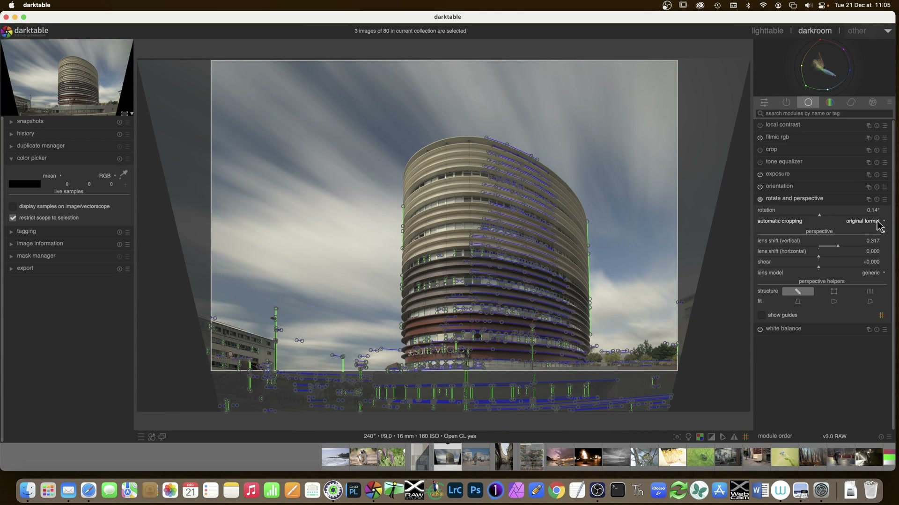
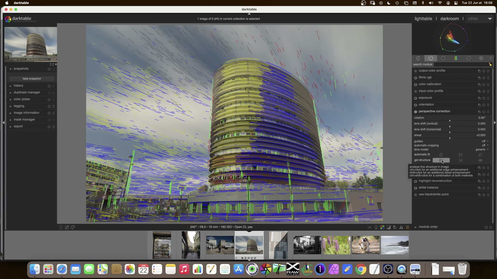
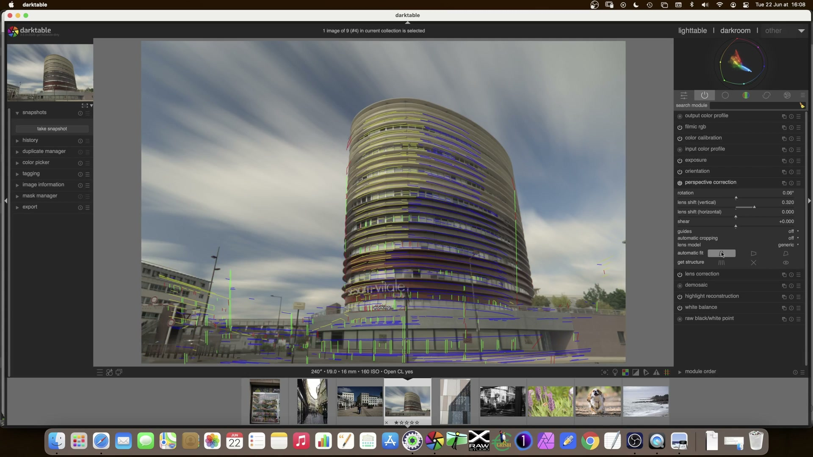

Rotate and Perspective¶
Il modulo rotate and perspective è lo strumento principale di darktable per la correzione geometrica avanzata: raddrizza orizzonti, corregge linee convergenti (effetto “palazzo che cade”), e applica trasformazioni di tipo lens shift ispirate agli obiettivi tilt-shift. Basato sull’algoritmo di Markus Hebel (ShiftN), opera in uno spazio scene-referred e supporta sia correzioni automatiche basate su rilevamento strutturale che interventi manuali precisi1.
{kind=link}
Il modulo è nascosto per default
I controlli prospettici sono compressi sotto l’intestazione perspective, visibile solo dopo aver cliccato sul titolo del modulo. Questa scelta riflette il fatto che la rotazione è l’uso più comune, mentre la correzione prospettica richiede un workflow più articolato1.
Panoramica¶
Il modulo gestisce due tipi di trasformazioni distinte ma correlate:
- Rotazione: correzione angolare intorno al centro dell’immagine, utile per orizzonti inclinati o composizioni non allineate.
- Correzione prospettica: deformazione non lineare per rendere parallele linee che dovrebbero esserlo nella realtà (es. facciate di edifici, binari ferroviari). Questa operazione richiede:
- Identificazione di strutture (linee verticali/orizzontali)
- Fitting automatico dei parametri di trasformazione
- Eventuale regolazione manuale dei risultati
A differenza del modulo crop and rotate, che opera con una semplice trasformazione affine (rotazione + ritaglio), rotate and perspective utilizza una trasformazione proiettiva completa che include shear, lens shift verticale/orizzontale e compensazione della distorsione geometrica1.
Flusso di lavoro consigliato¶
Il workflow ideale segue tre fasi sequenziali, con priorità alla precisione strutturale prima di ogni rotazione finale:
1. Identificazione delle strutture (structure)
|
2. Adattamento automatico (fit)
|
3. Rotazione finale (rotation) + ritaglio automatico
Passo 1: Definizione delle strutture¶
Prima di qualsiasi correzione, devi fornire al modulo informazioni sulle linee che definiscono la geometria della scena. Tre metodi sono disponibili:
| Metodo | Come funziona | Quando usarlo | Note tecniche |
|---|---|---|---|
| Automatic detection | Analisi automatica di segmenti lineari nell’immagine tramite edge detection | Scene con chiare linee architettoniche (edifici, finestre, strade) | Usa Shift+click per contrast enhancement e Ctrl+click per edge enhancement se il rilevamento fallisce1. Linee verdi = verticali convergenti; blu = orizzontali convergenti. |
| Draw structure lines | Disegno manuale di linee con il mouse: trascina per creare segmenti | Strutture parziali o degradate (es. facciate parzialmente oscurate) | Le linee vengono classificate automaticamente come verticali (verdi) o orizzontali (blu). Più linee → migliore fitting1. |
| Draw perspective rectangle | Disegno di un rettangolo con angoli modificabili | Correzioni keystone precise (es. facciate frontali) | Gli angoli del rettangolo definiscono le linee da rendere parallele — analogo al comportamento del modulo crop and rotate1. |
{kind=link}
Passo 2: Adattamento automatico (Fit)¶
Una volta definite le strutture, clicca uno dei pulsanti fit per calcolare i parametri ottimali:
| Pulsante | Azione | Effetto pratico | Note |
|---|---|---|---|
| Vertical | [icon-vertical] |
Applica solo lens shift (vertical) |
Corregge linee cadenti (es. edifici fotografati dal basso) senza alterare l’orizzonte1. |
| Horizontal | [icon-horizontal] |
Applica solo lens shift (horizontal) |
Corregge linee che si allargano verso l’alto (es. soffitti, pavimenti) — raro ma utile in interni1. |
| Both | [icon-both] |
Applica lens shift (vertical) + lens shift (horizontal) + shear |
Correzione completa per immagini con convergenza su entrambi gli assi. Richiede shear per mantenere la coerenza geometrica1. |
Ctrl+click e Shift+click sui pulsanti fit
Ctrl+click: applica solo la rotazione, ignorando il lens shiftShift+click: applica solo il lens shift, ignorando la rotazione
Questo ti permette di separare i due effetti per un controllo fine1.
Passo 3: Rotazione finale e ritaglio¶
Dopo il fitting, regola manualmente il parametro rotation per affinare l’allineamento (es. orizzonte perfetto). Infine, abilita automatic cropping per rimuovere i bordi neri creati dalla deformazione:
| Opzione | Comportamento | Valore tipico | Note |
|---|---|---|---|
| Largest area | Ritaglia al massimo possibile, sacrificando il rapporto d’aspetto | Default per editing rapido | Produce il maggior numero di pixel utilizzabili1. |
| Original format | Mantiene il rapporto d’aspetto originale, centrando il ritaglio | Consigliato per stampa o pubblicazione | Puoi trascinare manualmente la regione di ritaglio dopo l’applicazione1. |
Problemi noti con auto-crop
Su alcune versioni (5.5.0+), automatic cropping può disabilitarsi automaticamente dopo una rotazione con click-drag, mostrando il messaggio “automatic cropping failed” nei log2. Questo bug è documentato ma non ancora risolto. Soluzione immediata: riattivare manualmente la casella.
Parametri principali¶
| Parametro | Range | Default | Descrizione |
|---|---|---|---|
| rotation | -180° a +180° | 0.00° | Angolo di rotazione intorno al centro. Il limite soft è ±10°: oltre, richiede click destro per inserimento manuale1. |
| lens shift (vertical) | -1.000 a +1.000 | 0.000 | Correzione verticale: valori positivi spostano le linee verticali verso il centro (corregge “caduta”). Valori >0.9 possono produrre artefatti1. |
| lens shift (horizontal) | -1.000 a +1.000 | 0.000 | Correzione orizzontale: meno usato, utile per soffitti o pavimenti in interni. |
| shear | -1.000 a +1.000 | 0.000 | Deformazione diagonale necessaria quando si applicano entrambi i lens shift. Se non impostato, l’immagine appare “stirata”1. |
| automatic cropping | off / largest area / original format |
off |
Abilita il ritaglio automatico post-correzione. Fondamentale per evitare bordi neri1. |
| lens model | generic / specific |
generic |
Imposta i parametri ottici: generic assume 28mm su full-frame. specific richiede focal length e crop factor per maggiore accuratezza1. |
| focal length | 10–200 mm | preso da EXIF | Solo se lens model = specific. Valore predefinito estratto dai metadati RAW1. |
| crop factor | 1.0 (full-frame) a 2.7 (micro 4/3) | 1.00 | Solo se lens model = specific. Cruciale per calcoli geometrici precisi1. |
| aspect adjust | -1.000 a +1.000 | 0.000 | Regolazione manuale del rapporto d’aspetto. Utile per anamorfici o correzioni estreme1. |
{kind=link}
Workflow avanzato: correzione manuale e precisione¶
Per massimizzare il controllo, segui questo approccio iterativo:
- Attiva
show guides: visualizza griglie sovrapposte (regola dei terzi, spirale aurea) per valutare l’allineamento visivo1. - Usa il click-drag per rotazione: con il modulo attivo, clic destro + trascina su qualsiasi punto dell’immagine per disegnare una linea orizzontale/verticale. La rotazione viene adattata in tempo reale per renderla parallela al bordo dell’immagine1.
- Rifai il fitting dopo modifiche manuali: se regoli
lens shiftoshearmanualmente, clicca nuovamente su un pulsantefitper ricalcolare i parametri ottimali in base alle tue modifiche. - Verifica con zoom 100%: le deformazioni prospettiche sono critiche nei dettagli. Controlla sempre bordi, finestre, cornici a ingrandimento massimo.
Perché non usare solo crop and rotate?
Il modulo crop and rotate esegue una semplice trasformazione affine (rotazione + ritaglio). rotate and perspective, invece, applica una trasformazione proiettiva che mantiene le relazioni geometriche reali tra linee parallele. È indispensabile per architettura, interior design e fotografia tecnica dove la precisione geometrica è prioritaria1.
Esempi pratici da tutorial video¶
Esempio: correzione prospettica su edificio curvo (CCTV Tower)¶
Da [ENG] darktable Full edit #1 (min. 7:20)3
1. Apri l’immagine di un edificio curvo (es. CCTV Tower di Pechino) con evidente convergenza verticale.
2. Attiva rotate and perspective, clicca su structure → draw structure lines, quindi disegna 6–8 linee verticali lungo i bordi degli edifici.
3. Clicca il pulsante Vertical (icona verde): lens shift (vertical) si imposta automaticamente a +0.317.
4. Regola manualmente rotation a +0.14° per allineare l’orizzonte.
5. Abilita automatic cropping → original format, quindi trascina la regione di ritaglio per includere il tetto senza tagliare i dettagli laterali3.
Esempio: correzione di una facciata frontale con rettangolo prospettico¶
Da [ENG] darktable 3.8 What is new? (min. 2:15)4
1. Attiva rotate and perspective, clicca su structure → draw perspective rectangle.
2. Disegna un rettangolo che racchiuda la facciata: posiziona i 4 angoli sui bordi superiori/inferiori e sinistri/destri della struttura.
3. Clicca Both: lens shift (vertical) = +0.241, lens shift (horizontal) = -0.089, shear = +0.102.
4. Attiva show guides e seleziona grid → rule of thirds per allineare visivamente la composizione.
5. Disattiva automatic cropping, verifica i bordi con zoom 100%, quindi riattivalo solo alla fine4.
Esempio: correzione di interni con convergenza orizzontale¶
Da [ENG] Lowlight photos in darktable (min. 12:45)5
1. Carica un’immagine di un soffitto con linee che divergono verso l’alto (convergenza orizzontale).
2. Attiva structure → automatic detection, poi Ctrl+click sul pulsante get structure per applicare edge enhancement.
3. Clicca Horizontal: lens shift (horizontal) = -0.173 (valore negativo perché le linee divergono verso l’alto).
4. Aumenta leggermente shear a +0.042 per bilanciare la deformazione e preservare la proporzione delle finestre.
5. Usa rotation a -0.32° per correggere un leggero inclinamento residuo dell’asse centrale5.
Domande frequenti¶
Problema: automatic cropping si disattiva dopo una rotazione con click-drag¶
Questo comportamento è documentato come bug in darktable 5.5.0+. Il sistema interpreta erroneamente la rotazione interattiva come un’operazione che invalida la regione di ritaglio calcolata. La soluzione è riattivare manualmente la casella automatic cropping dopo ogni modifica interattiva2.
Problema: il rilevamento automatico non trova linee sufficienti su immagini con poca texture¶
Applica Shift+click sul pulsante get structure, che esegue un contrast enhancement preliminare, oppure combina Shift+click e Ctrl+click per attivare sia contrast che edge enhancement. In casi estremi, passa al disegno manuale con draw structure lines, tracciando almeno 5 linee per asse1.
Problema: artefatti di interpolazione ai bordi dopo correzione con lens shift > 0.8¶
Valori superiori a ±0.8 causano stretching dei pixel e perdita di nitidezza. Riduci lens shift (vertical) a +0.750, aumenta shear a +0.120 per compensare la deformazione, quindi applica local contrast con clarity = 12 solo sulla zona centrale usando una maschera ellittica3.
Consigli operativi¶
- Non esagerare con il lens shift: valori superiori a
±0.8producono artefatti di interpolazione (pixel “stirati”) e perdita di dettaglio ai bordi. Se necessario, combina con un leggeroshearper mitigare l’effetto1. - Usa
lens model = specificper fotografia professionale: inserisci manualmente lunghezza focale e crop factor (es.24mm,1.5per APS-C) per migliorare la precisione del fitting, soprattutto con obiettivi grandangolari1. - Disattiva
automatic croppingdurante il fitting: abilitalo solo alla fine, per poter valutare l’intera immagine deformata prima del ritaglio definitivo. - Salva preset per scenari ricorrenti: crea preset con
lens model = specific+focal lengthpreimpostato per il tuo obiettivo fisso (es. “24mm Architectural”).
Preset built-in del modulo¶
darktable fornisce preset preconfigurati per semplificare l’uso frequente. Questi sono accessibili dal menu hamburger del modulo:
| Preset | Quando usarlo | Note |
|---|---|---|
| Architectural (vertical only) | Fotografia di edifici da basso con caduta verticale marcata | Imposta lens shift (vertical) a +0.500, shear = 0.000, rotation = 0.00° |
| Interior (horizontal only) | Correzione di soffitti o pavimenti in ambienti chiusi | Imposta lens shift (horizontal) a -0.150, shear = 0.000, rotation = 0.00° |
| Keystone correction | Immagini frontali di facciate con convergenza su entrambi gli assi | Imposta lens shift (vertical) = +0.300, lens shift (horizontal) = -0.080, shear = +0.060 |
Riferimenti visuali¶

{kind=link}

{kind=link}

{kind=link}
Risorse aggiuntive¶
- darktable 4.8 User Manual — rotate and perspective — Documentazione ufficiale completa1
- Auto-crop from 'rotate and perspective' being disabled — Discussione tecnica su bug noti in dt 5.5+2
- [ENG] darktable Full edit #1 — Esempio pratico di correzione prospettica su edificio urbano (min. 7:20)3
- [ENG] darktable 3.8 What is new? — Spiegazione della riorganizzazione logica dei moduli Crop, Rotate, Perspective4
Fonti¶
-
darktable 4.8 user manual - rotate and perspective, https://docs.darktable.org/usermanual/4.8/en/module-reference/processing-modules/rotate-perspective/# ↩↩↩↩↩↩↩↩↩↩↩↩↩↩↩↩↩↩↩↩↩↩↩↩↩↩↩
-
Auto-crop from 'rotate and perspective' being disabled - darktable - discuss.pixls.us, https://discuss.pixls.us/t/auto-crop-from-rotate-and-perspective-being-disabled/57031 ↩↩↩
-
[ENG] darktable Full edit #1, https://www.youtube.com/watch?v=DzdGL30lYjU (min. 7:20) ↩↩↩↩
-
[ENG] darktable 3.8 What is new?, https://www.youtube.com/watch?v=5smugZ5pXN0 (min. 1:00–4:00) ↩↩↩
-
[ENG] Lowlight photos in darktable, https://www.youtube.com/watch?v=O7wXgmQZqiU (min. 12:45) ↩↩